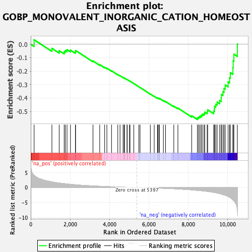
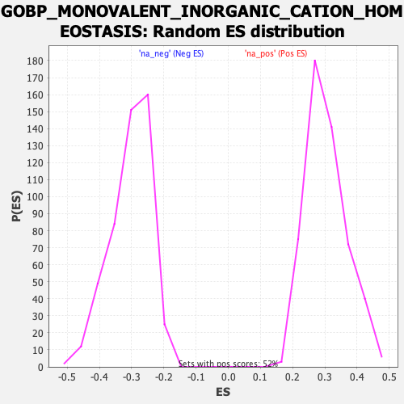

| Dataset | qlf.KOd4vsWTd4_gsea_score |
| Phenotype | NoPhenotypeAvailable |
| Upregulated in class | na_neg |
| GeneSet | GOBP_MONOVALENT_INORGANIC_CATION_HOMEOSTASIS |
| Enrichment Score (ES) | -0.5603901 |
| Normalized Enrichment Score (NES) | -1.8540238 |
| Nominal p-value | 0.0 |
| FDR q-value | 0.030634377 |
| FWER p-Value | 0.731 |

| SYMBOL | RANK IN GENE LIST | RANK METRIC SCORE | RUNNING ES | CORE ENRICHMENT | |
|---|---|---|---|---|---|
| 1 | SNX5 | 171 | 4.113 | 0.0334 | No |
| 2 | BCL2 | 1075 | 1.865 | -0.0305 | No |
| 3 | UBE3A | 1444 | 1.499 | -0.0475 | No |
| 4 | CLIC4 | 1698 | 1.302 | -0.0560 | No |
| 5 | TMPRSS3 | 1756 | 1.262 | -0.0462 | No |
| 6 | ATP1A1 | 1843 | 1.190 | -0.0400 | No |
| 7 | CCDC115 | 2017 | 1.062 | -0.0437 | No |
| 8 | ADORA2A | 2270 | 0.912 | -0.0568 | No |
| 9 | TMEM199 | 2277 | 0.909 | -0.0464 | No |
| 10 | SLC9A6 | 3161 | 0.538 | -0.1244 | No |
| 11 | DMXL1 | 3503 | 0.429 | -0.1519 | No |
| 12 | SLC12A2 | 3754 | 0.355 | -0.1715 | No |
| 13 | MAPK1 | 3867 | 0.325 | -0.1783 | No |
| 14 | ATP6V0A1 | 4104 | 0.263 | -0.1977 | No |
| 15 | TM9SF4 | 4421 | 0.187 | -0.2257 | No |
| 16 | NEDD4L | 4535 | 0.160 | -0.2346 | No |
| 17 | PDK2 | 4690 | 0.127 | -0.2478 | No |
| 18 | SLC9A7 | 4741 | 0.116 | -0.2512 | No |
| 19 | AVPR2 | 4766 | 0.112 | -0.2521 | No |
| 20 | CLN3 | 4893 | 0.089 | -0.2631 | No |
| 21 | CLN6 | 4896 | 0.089 | -0.2622 | No |
| 22 | RAB20 | 5010 | 0.068 | -0.2722 | No |
| 23 | KCTD7 | 5044 | 0.062 | -0.2746 | No |
| 24 | SLC4A7 | 5233 | 0.030 | -0.2922 | No |
| 25 | TCIRG1 | 5492 | -0.014 | -0.3168 | No |
| 26 | TMEM165 | 5552 | -0.023 | -0.3221 | No |
| 27 | ATP6V1H | 6074 | -0.110 | -0.3707 | No |
| 28 | CLCN3 | 6272 | -0.149 | -0.3877 | No |
| 29 | MAPK3 | 6441 | -0.186 | -0.4016 | No |
| 30 | SNAPIN | 6465 | -0.192 | -0.4014 | No |
| 31 | TMEM175 | 6527 | -0.206 | -0.4048 | No |
| 32 | EXT1 | 6529 | -0.206 | -0.4024 | No |
| 33 | VPS33A | 6737 | -0.258 | -0.4191 | No |
| 34 | SLC26A6 | 6848 | -0.287 | -0.4261 | No |
| 35 | RNASEK | 7266 | -0.405 | -0.4612 | No |
| 36 | ATP6AP1 | 7475 | -0.481 | -0.4753 | No |
| 37 | ATP6V0A2 | 8175 | -0.773 | -0.5328 | No |
| 38 | SLC9A8 | 8464 | -0.948 | -0.5489 | Yes |
| 39 | SLC9A1 | 8519 | -0.979 | -0.5422 | Yes |
| 40 | TMEM9 | 8586 | -1.020 | -0.5362 | Yes |
| 41 | ATP6V0D1 | 8652 | -1.061 | -0.5296 | Yes |
| 42 | ATP1B3 | 8709 | -1.095 | -0.5217 | Yes |
| 43 | CHP1 | 8798 | -1.143 | -0.5163 | Yes |
| 44 | GNAI2 | 8838 | -1.188 | -0.5056 | Yes |
| 45 | CLN5 | 8962 | -1.285 | -0.5018 | Yes |
| 46 | EXT2 | 8987 | -1.311 | -0.4883 | Yes |
| 47 | SLC12A4 | 9294 | -1.612 | -0.4981 | Yes |
| 48 | MLLT6 | 9328 | -1.647 | -0.4813 | Yes |
| 49 | SLC4A2 | 9338 | -1.657 | -0.4621 | Yes |
| 50 | KCNH2 | 9399 | -1.729 | -0.4469 | Yes |
| 51 | PPT1 | 9469 | -1.829 | -0.4313 | Yes |
| 52 | TMEM106B | 9594 | -2.029 | -0.4187 | Yes |
| 53 | ATP1B1 | 9674 | -2.171 | -0.3999 | Yes |
| 54 | SLC12A8 | 9681 | -2.189 | -0.3740 | Yes |
| 55 | SLC12A9 | 9761 | -2.352 | -0.3531 | Yes |
| 56 | GRN | 9817 | -2.460 | -0.3286 | Yes |
| 57 | SLC12A6 | 9879 | -2.569 | -0.3033 | Yes |
| 58 | MAFG | 10025 | -2.962 | -0.2813 | Yes |
| 59 | ATP6AP2 | 10099 | -3.252 | -0.2490 | Yes |
| 60 | ATP1A3 | 10138 | -3.411 | -0.2113 | Yes |
| 61 | SLC4A8 | 10268 | -4.123 | -0.1738 | Yes |
| 62 | HVCN1 | 10282 | -4.206 | -0.1241 | Yes |
| 63 | SLC12A7 | 10319 | -4.441 | -0.0738 | Yes |
| 64 | SLC9A9 | 10495 | -7.580 | 0.0012 | Yes |
